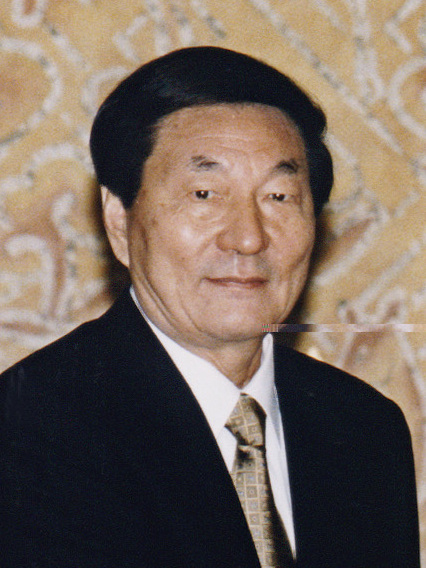
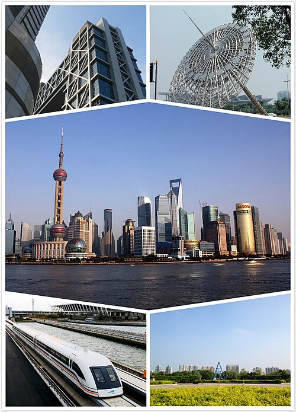
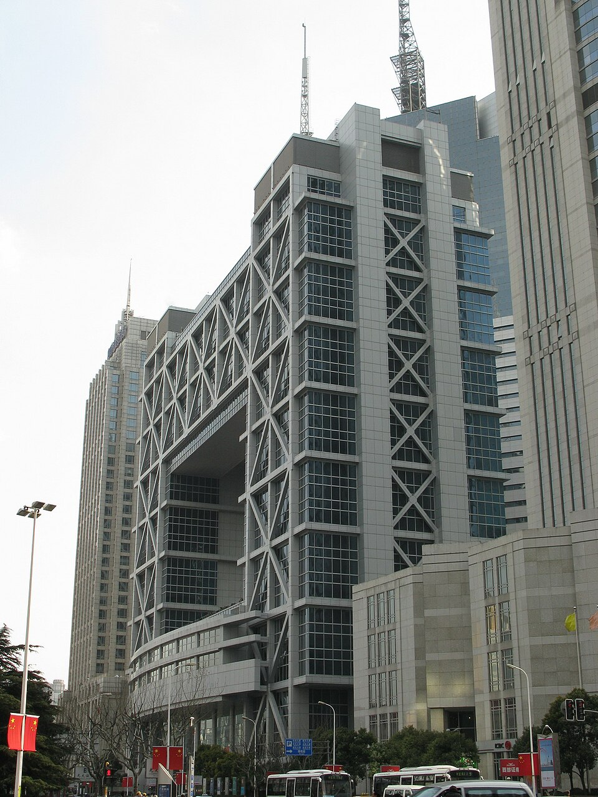

Entre la gira de un anciano retirado y la firma de un tratado comercial pasaron nueve años: tiempo suficiente para despedir a 21 millones de trabajadores estatales, reinventar el sistema fiscal del país y convertir a China en la fábrica del planeta. Fue la década en que el Partido decidió que el mercado no era el enemigo, sino la herramienta.
Toca cada acto para expandirlo.
Entre 1989 y 1991, el proceso de reformas económicas en China atravesó una parálisis profunda impulsada por la incertidumbre política tras los eventos de la Plaza de Tiananmen y el colapso de la Unión Soviética. El modelo económico de la década de 1980, aunque dinámico en el campo, acumulaba tensiones macroeconómicas severas en las ciudades.
El sistema de planificación centralizada coexistía con el sistema de precios de doble vía, provocando distorsiones de mercado, especulación y un brote inflacionario sin precedentes en 1988. El sector estatal mantenía miles de Empresas Estatales (SOE) ineficientes que operaban con pérdidas millonarias financiadas por subsidios públicos.
La estructura fiscal del Estado central se desmoronaba: bajo el sistema de contratos fiscales descentralizados de los años ochenta, los ingresos del gobierno central cayeron del 35% a apenas el 11% del PIB, y el presupuesto central directo a solo el 3% del PIB. Los sectores conservadores, liderados por Chen Yun, abogaban por frenar la liberalización y retornar al control estatal mediante la "economía de jaula de pájaros".
El acontecimiento que rompió el estancamiento ideológico fue la Gira por el Sur de Deng Xiaoping entre enero y febrero de 1992. Con 87 años y sin cargos formales, Deng viajó a las Zonas Económicas Especiales de Shenzhen, Zhuhai y Guangzhou para defender la apertura exterior y el pragmatismo económico. Frente a los dogmas de la ortodoxia, consagró la "Teoría del Gato": "la proporción entre planificación y mercado no es la diferencia esencial entre capitalismo y socialismo... el mercado y la planificación son solo herramientas para distribuir recursos".
El impacto político fue inmediato: en octubre de 1992, el 14º Congreso Nacional del PCCh formalizó el giro histórico al declarar por primera vez que el objetivo definitivo de la reforma económica era construir una "Economía Socialista de Mercado". Esto legitimó la propiedad privada, la inversión extranjera masiva y el uso de los precios de mercado como mecanismo principal de asignación de recursos.

Se abolió el sistema de contratos provinciales y se unificó la recaudación fiscal, recentralizando los ingresos tributarios en Pekín mediante un IVA del 17%. A cambio, los municipios retuvieron las rentas por arrendamiento de suelo urbano, origen del "financiamiento por tierras".
Se abolió el tipo de cambio oficial sobrevaluado y se unificó con la tasa de los centros de ajuste, depreciando la moneda a 8.7 RMB por dólar y fortaleciendo masivamente la competitividad exportadora.
El Estado privatizó, vendió o liquidó más de 50,000 pequeñas y medianas SOE ineficientes, reteniendo el control sobre grandes conglomerados estratégicos en energía, banca y telecomunicaciones.
Frente a la Crisis Financiera Asiática de 1997-1998, China se negó a devaluar el renminbi, absorbió el shock internacional y reformó el sistema bancario creando cuatro grandes reguladores y bancos de política. Tras años de duras negociaciones con EE. UU. y Europa, el 11 de diciembre de 2001 China firmó su adhesión a la Organización Mundial del Comercio, aceptando drásticas reducciones arancelarias a cambio de integrarse plenamente al comercio multilateral.
El crecimiento del PIB real se mantuvo en un promedio superior al 9%-10% anual, cuadruplicando el tamaño de la economía entre 1978 y 2000.

En 1997 y 1999, la Constitución reconoció a la economía privada como un "componente importante" de la economía socialista de mercado, ya no un mero "suplemento". Nacieron empresas icónicas como Alibaba en 1999. Pero la reforma de las SOE provocó el despido de más de 21 millones de trabajadores estatales en las ciudades, disolviendo el "tazón de arroz de hierro", mientras más de 150 millones de campesinos migraron a las metrópolis costeras para trabajar en fábricas de exportación.
China como la "fábrica del mundo". La combinación de las ZEE, el fin de las cuotas textiles y el ingreso a la OMC en 2001 atrajo a más de 400 empresas de la lista Fortune 500, convirtiendo a la costa este china en el nodo central de las cadenas globales de valor.

El origen de la deuda local y el mercado inmobiliario. La reforma fiscal de 1994 creó el déficit estructural de los municipios que dio nacimiento a la dependencia gubernamental del mercado inmobiliario y a la proliferación de las plataformas de inversión local (LGFV) que hoy desafían la estabilidad financiera del país.
La doctrina "Zhua da, fang xiao" fijó el mapa empresarial actual: el Estado retiene el monopolio sobre las "alturas dominantes" —energía, banca, infraestructura, bajo la supervisión de SASAC— mientras permite un ecosistema privado dinámico en tecnología y consumo.
La doctrina de 1997 de retener energía, banca e infraestructura mientras libera el resto sigue siendo el mapa de qué sectores son intocables para el capital privado.
La reforma fiscal de 1994 explica, veinte años después, por qué los gobiernos locales chinos dependen tanto de vender suelo urbano.
Binhai, Xiong'an y los puertos de libre comercio como Hainan son la misma receta probada en Shenzhen y Pudong en los noventa.
Contenido curado por el equipo de Club Kongzhi a partir de fuentes académicas reunidas en el cuaderno de NotebookLM dedicado a la Economía Socialista de Mercado y la entrada a la OMC.